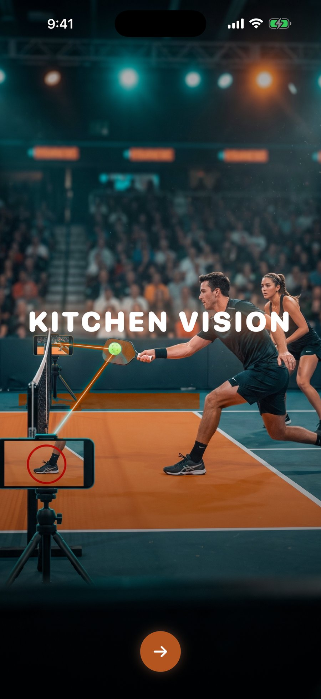
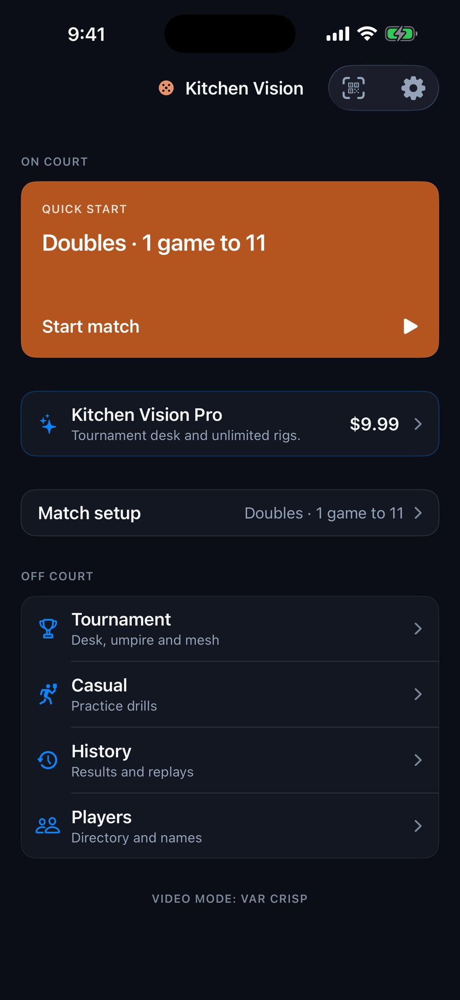
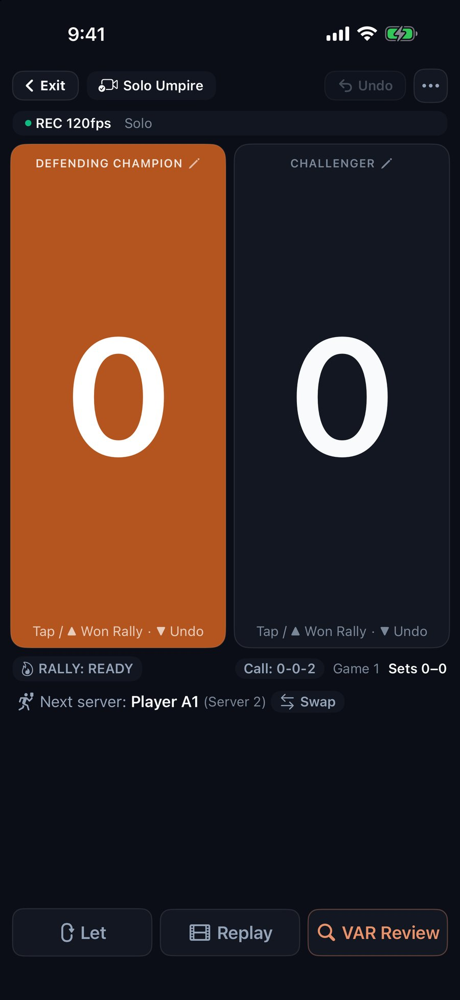
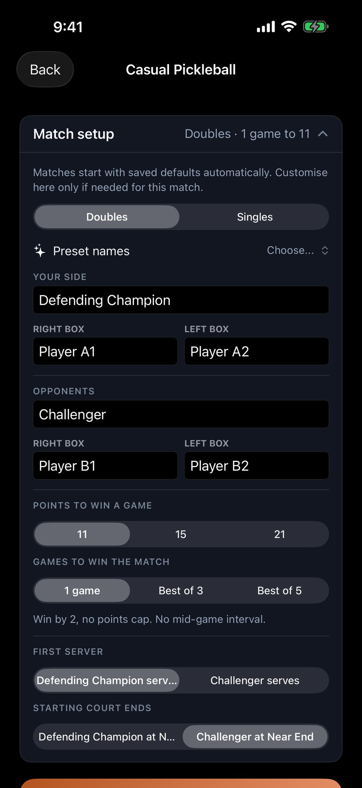
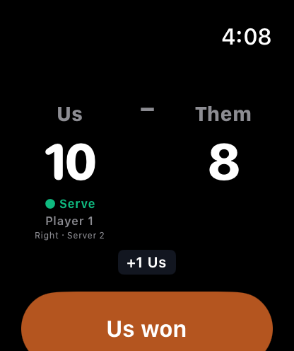
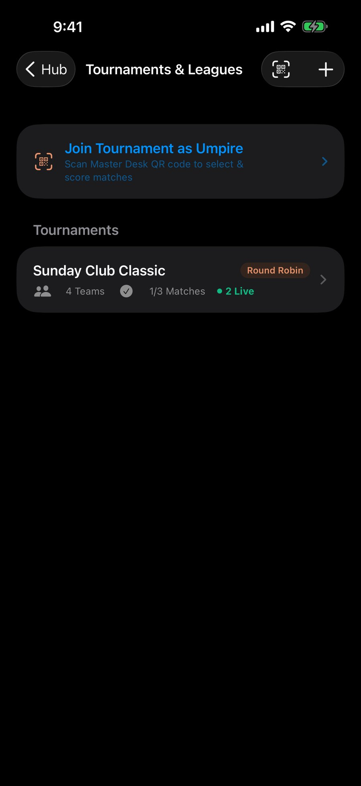
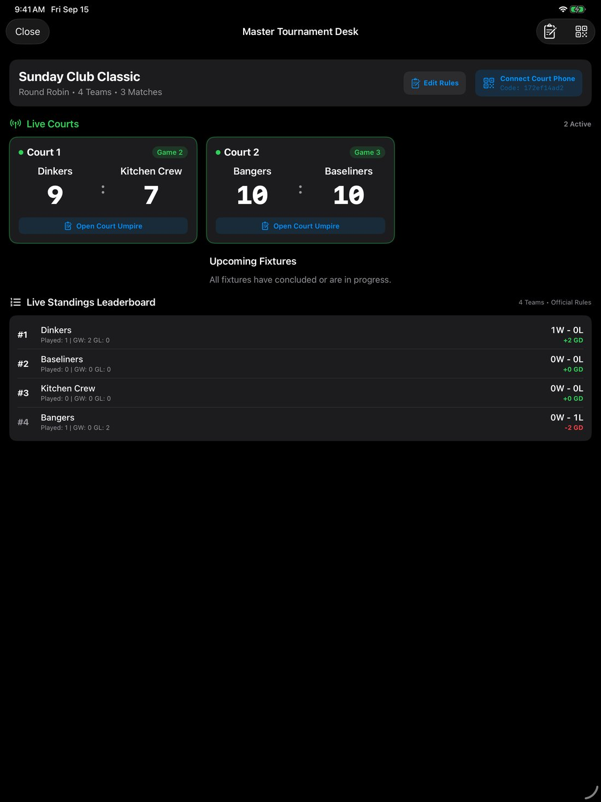
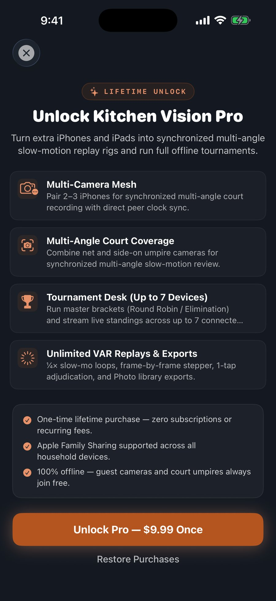

Kitchen Vision
Score, replay and run pickleball matches on the iPhones and iPads you already own. Kitchen Vision keeps the 0-0-2 start, side-out server rotation and 3-number callout for you, puts any disputed rally one tap away in ¼× slow motion, and runs a tournament desk — 100% offline, with an Apple Watch app to keep score from your wrist.
In-App Experience
A dark, high-contrast design in clay-court orange, built for bright outdoor courts and indoor club lighting alike.








The 0-0-2 Side-Out Rule Kept For You
Pickleball doubles begins with only one server ("0-0-2"), rotates through Server 1 and Server 2 on subsequent side-outs, and requires server score parity matching the right/left courts. Kitchen Vision works out the exact 3-number callout on every point, so arguments never stall the match. MLP-style rally scoring to 21 is built in too.
Scoring With Your Thumb, Slow-Mo When It Matters
Tap or swipe up on a side to award the rally and swipe down to take it back. When a kitchen fault or a line is disputed, tap VAR Review to watch the last rally again in ¼× slow motion from local rolling memory, step frame by frame, and make the call yourself. Kitchen Vision does not make line or kitchen calls for you — it gives you the footage to decide.
Keep Score From Your Wrist
Start a match on your iPhone and the Apple Watch app shows the same team names — "Us" and "Them" unless you pick your own — with the live score and who is serving. Tap or swipe up on a side to give it the rally, swipe down to undo. Built for casual games where nobody wants to walk to the phone between points. It is a remote for the match on your phone, not a separate scorer.
Every Angle, No Router
Pair 2 to 3 iPhones peer-to-peer over Bluetooth and local Wi-Fi — no router, no internet. Every phone shows the live score, and the extra cameras give you synchronized angles of the same rally to review.
How Hard Did You Actually Hit That?
Kitchen Vision measures the speed of a shot at the moment it leaves the paddle, correcting for the speed the ball sheds against the air before the camera gets a clean look at it. In practice mode a single phone is enough — the ball's known width against its size on screen gives the scale, with nothing to calibrate. Readings are shown as a range rather than one number, because that is what the measurement honestly supports.
Multi-Court Live Standings on One iPad
Organize club round robins and elimination brackets on an iPad Master Desk. Court scorers connect by scanning a QR code and stream live scores and results back to the desk, across up to 7 connected devices — all peer-to-peer.
Getting Started
One phone is enough to score and replay. Add more only when you want more angles or a whole event.
Score a Game on One Phone
- Mount or prop your iPhone steady beside the court so it sees the whole court. Handheld works for scoring, but the replay shakes.
- Tap Start match on Home. Sides start as “Us” and “Them”; open Match setup first to type names or tap Preset names.
- Tap or swipe up on a side to award the rally, swipe down to undo. The 3-number callout updates on every point. Tap VAR Review to replay a disputed rally.
Keep Score From Your Wrist
- The Watch app comes with Kitchen Vision. If it isn't on your watch, install it from the Watch app on your iPhone (watchOS 10 or later).
- Start a match on your iPhone, then open Kitchen Vision on your watch. The first-named side is yours.
- Tap or swipe up to score, swipe down to undo. Keep the phone nearby — the watch is a remote for the match on the phone.
Add a Second or Third Angle
- Host taps Tournament → Multi-Phone Mesh, picks Duo or Pro, then taps Pair with Other Phones.
- On each extra phone, tap the QR icon on Home and scan the code, or enter the code shown beneath it. Guests never need Pro.
- Place the second phone at the opposite net post, and a third beside the court for a side-on angle. No router or internet needed.
Run a Club Event From an iPad
- On an iPad, tap Tournament → Tournament Desk & Standings → Create Tournament.
- Paste your roster and generate Round Robin or elimination fixtures.
- Open the Master Desk and tap Connect Court Phone. Court scorers scan the code, choose their court and score live — up to 7 connected devices.
Drill Alone and Check Your Shot Speed
- Tap Casual on Home, then Living Room Practice.
- Stand the phone still and hit the ball in front of the camera. It counts your returns and keeps your best run.
- Each shot's speed appears as a range, with your best of the session beside it.
Bring It to Your Next Game
Kitchen Vision is free to download for iPhone and iPad, with the Apple Watch app included. Scoring and VAR replay are free; Kitchen Vision Pro is a one-time lifetime unlock for multi-phone rigs and the tournament desk. Questions or a bug on court? Email me.